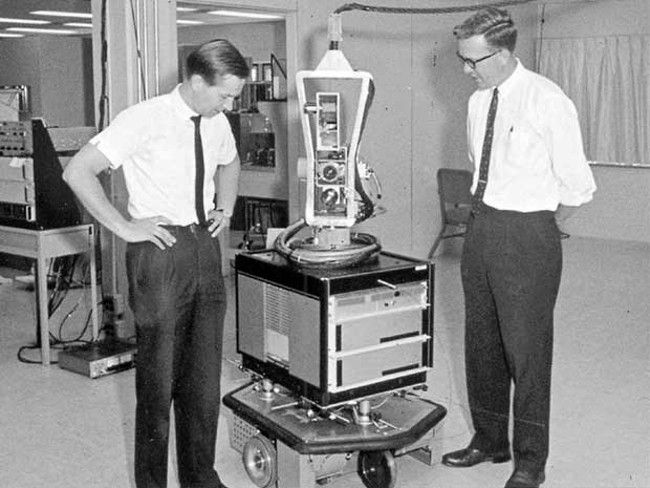

Интересные факты
CPU
Джон Маккарти стал первым, кто реализовал концепцию разделения времени — начал применять один центральный процессор, известный как CPU или «мозг компьютера», для одновременной работы с несколькими пользователями. Это инженерное решение стало первой ступенью к созданию современных облачных хранилищ.
John McCarthy was the first to implement the concept of time-sharing—using a single central processing unit, known as a CPU or "computer brain," to handle multiple simultaneous users. This engineering solution paved the way for the creation of modern cloud storage.
Свойство нового ЯП
Lisp получил свое название за счёт возможности обрабатывать списки (List Processing). Это было еще одной особенностью нового языка программирования.
Lisp got its name from its ability to process lists (list processing), another feature of the new programming language.
Дружба народов
Американский информатик впервые встретился с тогда ещё молодым специалистом Андреем Петровичем Ершовым осенью 1958 года на международном симпозиуме «Механизация процессов мышления» в Теддингтоне (Англия). В результате между ними образовалась многолетняя дружба: Джон даже успел побывать в СССР семь раз. Их переписка и совместная работа во времена, когда американец и советский гражданин находились по разные стороны баррикад — яркий пример того, что для настоящей науки и её последователей нет никаких границ.
"Я не знаю другого человека в нашем вычислительном мире, чьи интересы и подход настолько были бы близки моим. Особенно мне импонирует Ваш интерес к математической теории вычислений и взаимодействию человека и машины. Так же, как, по-видимому, и Вы, Я считаю себя математиком, но в тайне надеюсь, что наша деятельность сможет что-то познать и изменить в реальном мире…" А.П.Ершов
Поединок умов
Маккарти совместно со своей командой принял участие в шахматной игре против советских коллег из ИТЭФ, применяя компьютерную программу в 1967 году. Матч проводился по телеграфу и затянулся почти на год из-за того, что московские ученые могли играть только ночью — днем компьютер решал задачи для физиков. В результате Стэнфордская лаборатория проиграла две партии и одну сыграла вничью.
Первый киберпомощник
Также команда Маккарти создала первого в мире мобильного робота общего назначения Shakey, способного говорить на английском, воспринимать примитивные факты, создавать план и исправлять собственные ошибки.
